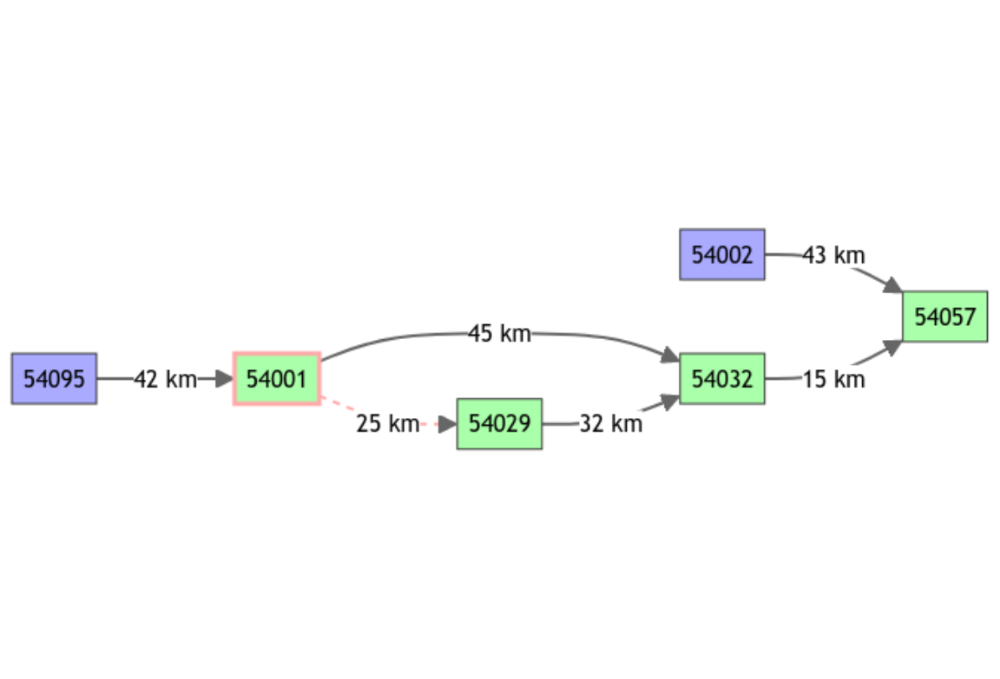
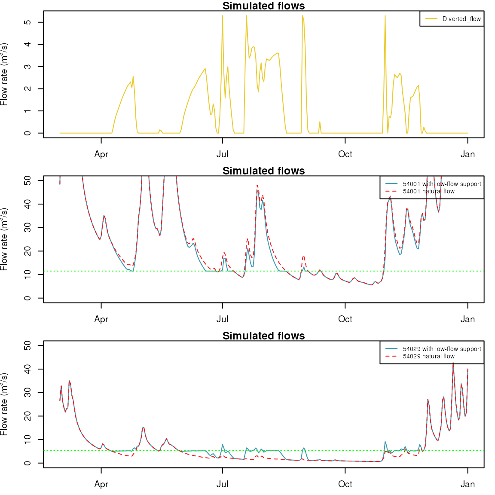

vignettes/V06_Modelling_regulated_diversion.Rmd
V06_Modelling_regulated_diversion.Rmd
library(airGRiwrm)
#> Loading required package: airGR
#>
#> Attaching package: 'airGRiwrm'
#> The following objects are masked from 'package:airGR':
#>
#> Calibration, CreateCalibOptions, CreateInputsCrit,
#> CreateInputsModel, CreateRunOptions, RunModel
data(Severn)In this vignette, we are still using the study case of the vignette #1 and #2, and we are going to simulate a diversion at the node “54001” to provide flow to the node “54029” in order to support low flows in the Severn river.
This objective is to maintain a minimum flow equals to the 3th decile of the flow at station “54029” without remaining less than the first decile of the flow downstream the station “54001”.
Let’s compute the flow quantiles at each station in m3/s:
Qobs <- cbind(sapply(Severn$BasinsObs, function(x) {x$discharge_spec}))
Qobs <- Qobs[, Severn$BasinsInfo$gauge_id]
Qobs_m3s <- t(apply(Qobs, 1, function(r) r * Severn$BasinsInfo$area * 1E3 / 86400))
apply(Qobs_m3s[, c("54029", "54001")], 2, quantile, probs = seq(0,1,0.1), na.rm = TRUE)
#> 54029 54001
#> 0% 1.030312 7.517187
#> 10% 2.575781 11.526354
#> 20% 3.949531 15.034375
#> 30% 5.323281 20.045833
#> 40% 7.383906 26.059583
#> 50% 9.787969 34.077917
#> 60% 13.050625 44.601979
#> 70% 18.717344 62.142083
#> 80% 27.475000 90.707396
#> 90% 42.586250 143.828854
#> 100% 291.063281 496.635521The rule to apply is expressed as follow:
The diversion from “54001” is computed to maintain a minimum flow of 5.3 m3/s at the gauging station “54029”. The diversion is allowed as far as the flow at the gauging station “54001” is above 11.5 m3/s.
nodes_div <- Severn$BasinsInfo[, c("gauge_id", "downstream_id", "distance_downstream", "area")]
nodes_div$model <- "RunModel_GR4J"
nodes_div <- rbind(nodes_div, data.frame(gauge_id = "54001",
downstream_id = "54029",
distance_downstream = 25,
model = "Diversion",
area = NA))
renameCols <- list(id = "gauge_id", down = "downstream_id", length = "distance_downstream")
griwrmV06 <- CreateGRiwrm(nodes_div, renameCols)
plot(griwrmV06)
We produce below the same operations as in the vignette “V02_Calibration_SD_model” to prepare the input data:
data(Severn)
nodes <- Severn$BasinsInfo[, c("gauge_id", "downstream_id", "distance_downstream", "area")]
nodes$model <- "RunModel_GR4J"
griwrm <- CreateGRiwrm(nodes, list(id = "gauge_id", down = "downstream_id", length = "distance_downstream"))
BasinsObs <- Severn$BasinsObs
DatesR <- BasinsObs[[1]]$DatesR
PrecipTot <- cbind(sapply(BasinsObs, function(x) {x$precipitation}))
PotEvapTot <- cbind(sapply(BasinsObs, function(x) {x$peti}))
Precip <- ConvertMeteoSD(griwrm, PrecipTot)
PotEvap <- ConvertMeteoSD(griwrm, PotEvapTot)The main difference here is that we need to provide a diverted flow and a minimum remaining flow at station “54029”. As, the diverted flow will be calculated during simulation, we provide a initial diverted flow equals to zero for all the time steps.
Qdiv <- matrix(rep(0, length(DatesR)), ncol = 1)
colnames(Qdiv) <- "54001"
Qmin <- matrix(rep(11.5 * 86400, length(DatesR)), ncol = 1)
colnames(Qmin) <- "54001"
IM_div <- CreateInputsModel(griwrmV06, DatesR, Precip, PotEvap, Qobs = Qdiv, Qmin = Qmin)
#> CreateInputsModel.GRiwrm: Processing sub-basin 54095...
#> CreateInputsModel.GRiwrm: Processing sub-basin 54002...
#> CreateInputsModel.GRiwrm: Processing sub-basin 54001...
#> CreateInputsModel.GRiwrm: Processing sub-basin 54029...
#> CreateInputsModel.GRiwrm: Processing sub-basin 54032...
#> CreateInputsModel.GRiwrm: Processing sub-basin 54057...The simulation is piloted through a Supervisor that can
contain one or more Controller. The supervision time step
will be here the same as the simulation time step: 1 day. Each day, the
decision is taken for the current day from the measurement simulated the
previous time step.
sv <- CreateSupervisor(IM_div, TimeStep = 1L)On a Diversion node, the minimum remaining flow is provided with the inputs and is automatically taken into account by the model. So the control logic function has only to take care about how much water to divert to the gauging station “54002”.
We need to enclose the logic function in a function factory providing the Supervisor in the environment of the function:
#' @param sv the Supervisor environment
logicFunFactory <- function(sv) {
#' @param Y Flow measured at "54002" the previous time step
function(Y) {
Qnat <- Y
# We need to remove the diverted flow to compute the natural flow at "54002"
lastU <- sv$controllers[[sv$controller.id]]$U
if (length(lastU) > 0) {
Qnat <- max(0, Y + lastU)
}
return(-max(5.3 * 86400 - Qnat, 0))
}
}We declare the controller which defines where is the measurement
Y , where to apply the decision U with which
logic function:
CreateController(sv,
ctrl.id = "Low flow support",
Y = "54029",
U = "54001",
FUN = logicFunFactory(sv))
#> The controller 'Low flow support' has been added to the supervisorFirst we need to create a GRiwrmRunOptions object and
load the parameters calibrated in the vignette
“V02_Calibration_SD_model”:
# Running simulation on year 2003
IndPeriod_Run <- which(
DatesR >= as.POSIXct("2003-03-01", tz = "UTC") &
DatesR <= as.POSIXct("2004-01-01", tz = "UTC")
)
IndPeriod_WarmUp = seq(IndPeriod_Run[1] - 366,IndPeriod_Run[1] - 1)
RunOptions <- CreateRunOptions(IM_div,
IndPeriod_WarmUp = IndPeriod_WarmUp,
IndPeriod_Run = IndPeriod_Run)
ParamV02 <- readRDS(system.file("vignettes", "ParamV02.RDS", package = "airGRiwrm"))The node “54029” was initially an upstream node. As it receives water from “54001” it is no longer an upstream node and needs a parameter for routing its upstream flows. We arbitrary say that the velocity in the channel between “54001” and “54029” is 1 m/s.
ParamV02$`54029` <- c(1, ParamV02$`54029`)And we run the supervised model:
OM_div <- RunModel(sv, RunOptions = RunOptions, Param = ParamV02)
#> Processing: 0% 10% 20% 30% 40% 50% 60% 70% 80% 90% 100%To compare results with diversion and without diversion, we run the model without the supervision (remember that we have set the diverted flow at zero in the inputs):
OM_nat <- RunModel(IM_div, RunOptions = RunOptions, Param = ParamV02)
#> RunModel.GRiwrmInputsModel: Processing sub-basin 54095...
#> RunModel.GRiwrmInputsModel: Processing sub-basin 54002...
#> RunModel.GRiwrmInputsModel: Processing sub-basin 54001...
#> RunModel.GRiwrmInputsModel: Processing sub-basin 54029...
#> RunModel.GRiwrmInputsModel: Processing sub-basin 54032...
#> RunModel.GRiwrmInputsModel: Processing sub-basin 54057...Let’s plot the diverted flow, and compare the flow at stations 54029 and 54001, with and without low-flow support at station 54001:
dfQdiv <- data.frame(DatesR = OM_div[[1]]$DatesR,
Diverted_flow = OM_div$`54001`$Qdiv_m3 / 86400)
oldpar <- par(mfrow=c(3,1), mar = c(2.5,4,1,1))
plot.Qm3s(dfQdiv)
# Plot natural and influenced flow at station "54001" and "54029"
thresholds <- c("54001" = 11.5, "54029" = 5.3)
lapply(names(thresholds), function(id) {
df <- cbind(attr(OM_div, "Qm3s")[, c("DatesR", id)],
attr(OM_nat, "Qm3s")[, id])
names(df) <- c("DatesR",
paste(id, "with low-flow support"),
paste(id, "natural flow"))
plot.Qm3s(df, ylim = c(0,50), lty = c("solid", "dashed"))
abline(h = thresholds[id], col = "green", lty = "dotted")
})
#> [[1]]
#> NULL
#>
#> [[2]]
#> NULL
par(oldpar)